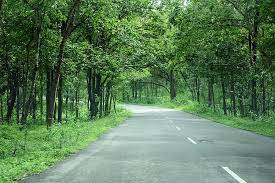

1 / 6
.jfif)
Wayanad
2 / 6

wayanad
3 / 6

Wayanad
4 / 6

Wayanad
5 / 6

Wayanad
6 / 6
.jfif)
Wayanad
This popular town is famous for wildlife and its spice plantations. Wayanad is part of a forest reserve, located on the border of Tamil Nadu and Kerala. Because of it wild green coverage it offers great scenic beauty along with the experience of seeing wildlife. The weather here is mostly constant but October till May are the best months to visit. It is located at a distance of 76 km from the sea shores of Kozhikode. Wayanad hills are contiguous to Mudumalai in Tamil Nadu and Bandipur in Karnataka, thus forming a vast land mass for the wild life to move about in their most natural abode.
Adorning the northern hills of Kerala is the beautiful district of Wayanad, maintained by the District Tourism Promotion Council, Wayanad. This area is famous for its large amount of camping and trekking trails, breathtaking waterfalls, caves, bird-watching sites, flora, fauna and an overall plethora of magnificent sights. This area has been a tourist favourite over the years. People are especially delighted by the range of exotic products including spices, coffee, tea, bamboo products, honey and herbal plants available here. Kanthanpara Waterfalls is one hotspot in Wayanad that allures tourists from all over the world. Apart from these magnificent falls, Wayanad calls you to experience the stunning beauty of Karapuzha Dam, Pookode & Karlad Lake as well. If you are an adventure seeker, then Cheengari Rock Adventure Center is a must-visit place for you. Another must-visit place in Wayanad is the Edakkal Caves. The caves are two natural rock formations believed to have been formed by a large split in a huge rock. The carvings inside are extremely beautiful.
Wayanad is a place of captivating tales of the olden times and civilization. It is nestled in the midst of the Western Ghats bordering the region of Kerala. The Wayanad wild life sanctuary is one of the most significant excursions from Wayanad. Thus it attracts the wild-life lovers. Although mid-range hotels are hardly found in this district, you can also stay in cottages and 3 star hotels with ample facilities as well as deluxe.
Contact:
DTPC Wayanad,
Civil Station,
North Kalpetta,
Wayanad.
Phone: + 91 4936 202134
Mail: info@dtpcwayanad.com
Website: wayanadtourism.org